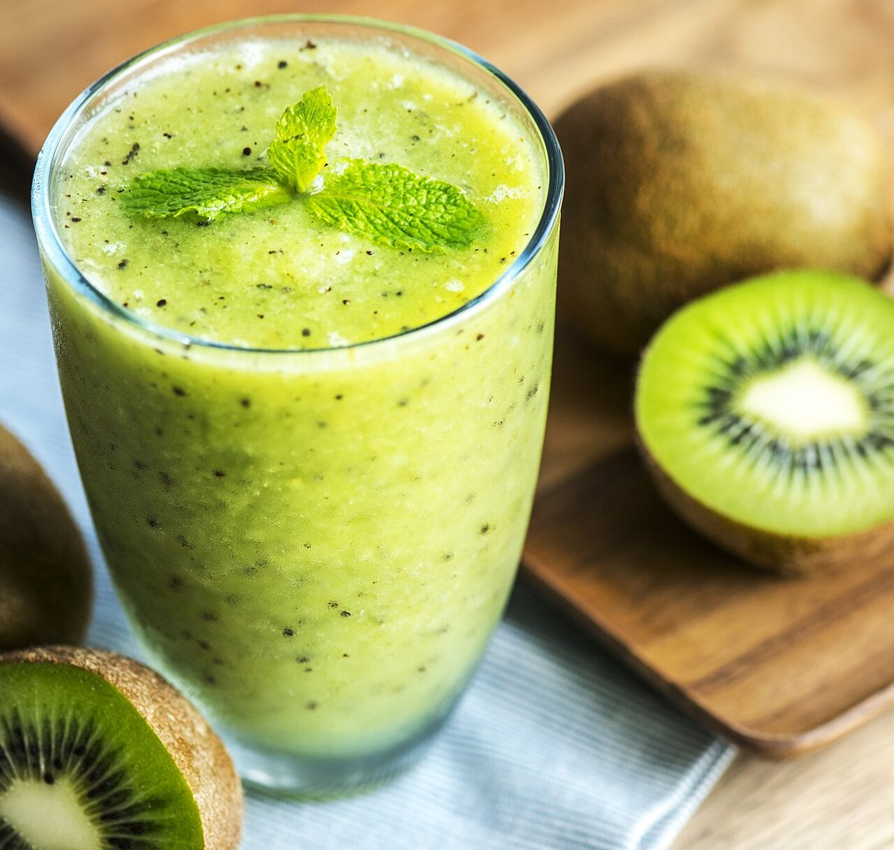
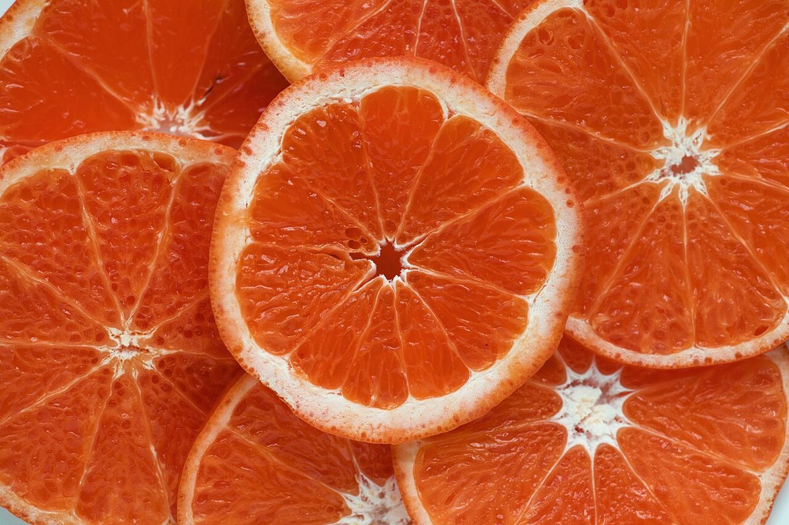
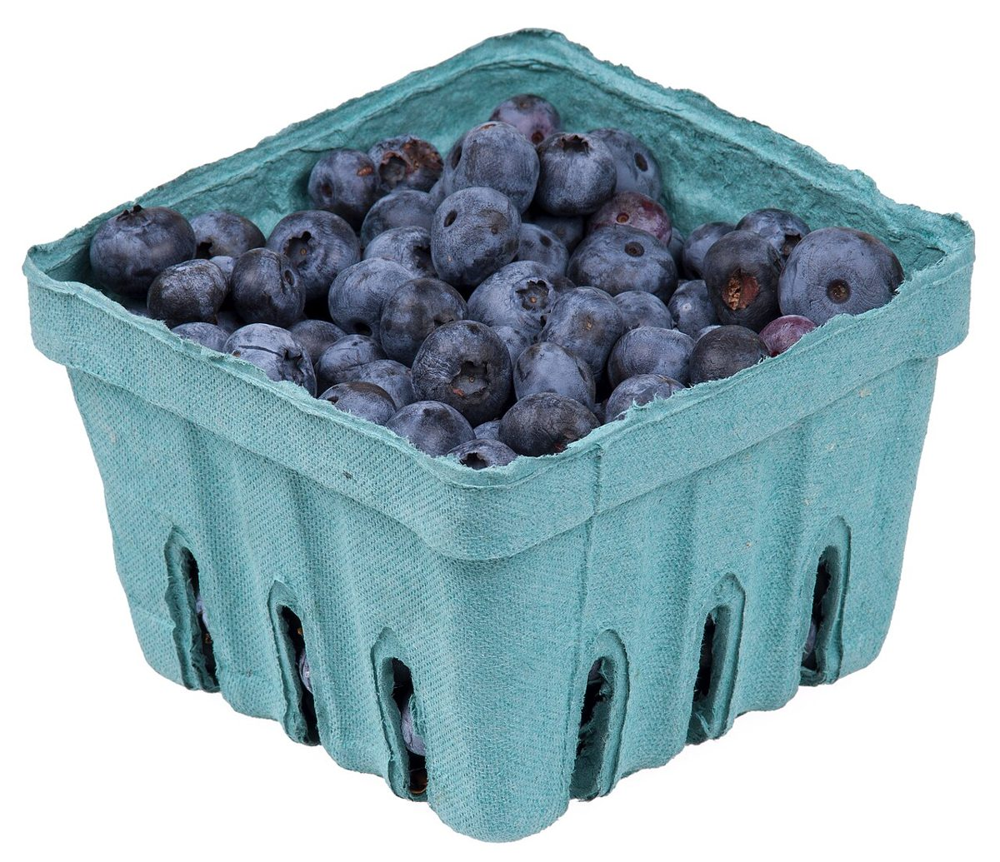

フルーツスムージーショップ
カフェ / 青森県むつ市
tokuichi
青森県むつ市新町にある「tokuichi フルーツスムージーショップ」のご案内ページです。営業時間やメニューなど、詳しいことは準備中。お電話かInstagramからどうぞ。




制作側の連想
青果のシールの台紙から
このサイトは、果物に貼る丸いシールを台紙に並べたような作りにしています。店名「フルーツスムージーショップ」から制作側が連想したもので、お店の理念・由来とは無関係です。写真は一枚ずつ台紙から「はがせる」丸いシールに見立て、はがした跡の空きは、貴店ご提供の写真が入る場所です。
ご案内
確認できていること
| 所在地 | 〒035-0051 青森県むつ市新町37-2 |
|---|---|
| 電話 | 090-8615-1091 |
| 営業時間 | 準備中 |
| 定休日 | 準備中 |
| ご予約 | 準備中 |
| 駐車場 | 準備中 |
| SNS | Instagram @tokuichi_1091 |